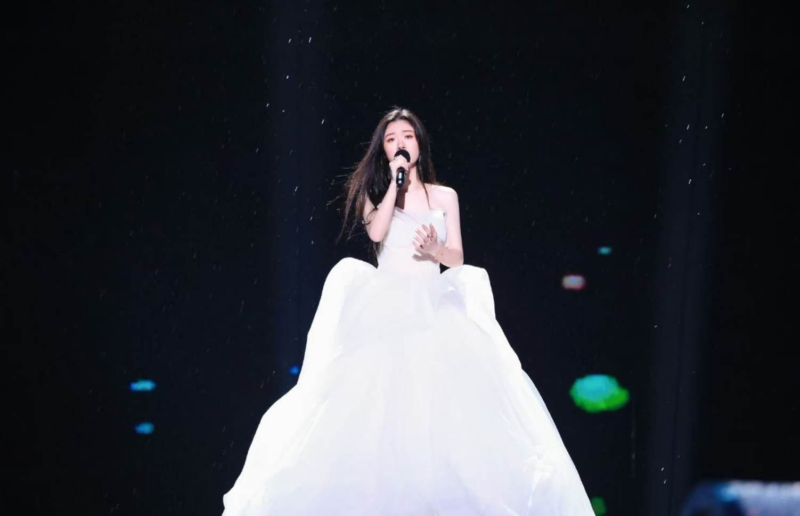
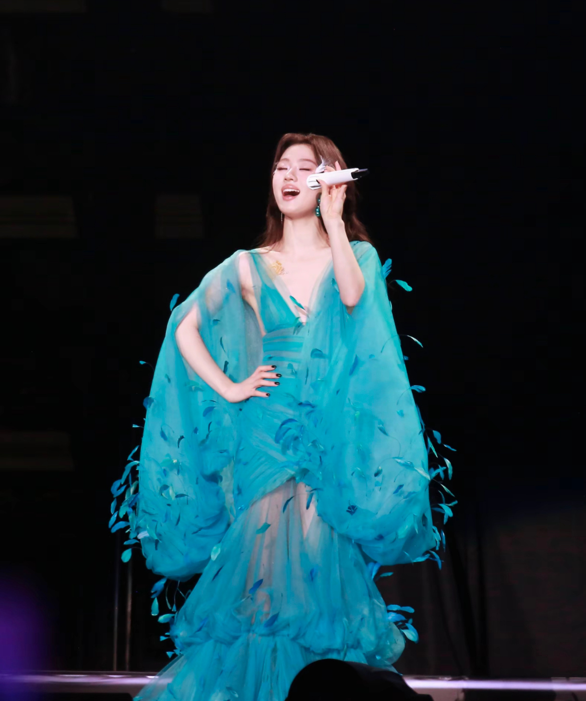

她不是一夜之间出现的人。在拿到冠军之前，她已经对着手机翻唱了很多年。
单依纯的妈妈是越剧戏迷，家里常年放着越剧唱段。孩子跟着哼，耳朵先学会了怎么把一句旋律唱得婉转。
初中开始，她在一款唱歌软件上一遍遍翻唱，没有舞台、没有观众，只有录音和评分。高三那年，她进入艺考培训班，学音乐的费用由家里贷款支付。
2020 年，她从东阳第三中学毕业，参加全国艺考，以专业第一名的成绩进入浙江音乐学院流行音乐系。同年夏天，她报名了《中国好声音2020》，最终获得年度总冠军。
12 月 23 日出生于浙江省金华市东阳市，在那里读书、长大。
参与湖南卫视互动音乐综艺《我想和你唱第三季》，与李健合唱《绒花》。两年后，这位歌手成了她在好声音战队的导师。
高中毕业后参加全国艺考，以专业第一名考入浙江音乐学院流行音乐系。
初舞台演唱《永不失联的爱》加入李健战队；11 月 20 日，凭借《城市之光》《好久不见》《星·Sailing》获得年度总冠军，18 岁正式出道。赛后受邀为张艺谋电影《一秒钟》演唱推广曲《给电影人的情书》。

发行首支个人单曲《照片》，随后《在夜里跳舞》《爱我的时候》《分身》《喂》陆续上线，开始拥有属于自己的歌。
发行首张录音室专辑《勇敢额度》；11 月获得第 29 届东方风云榜"最佳新锐歌手"。
1 月登上中央广播电视总台春节联欢晚会，合唱《绿水青山》；12 月 22、23 日在杭州"小莲花"体育馆连开两场，这是她的首场个人线下演唱会。
继 2023 年之后第二次登上春晚；8 月第 31 届东方风云榜上获"最受欢迎女歌手""亚洲品质歌手"，歌曲《想你时风起》获十大金曲。
1 月完成个人首次巡演，成都、北京、南京、深圳、济南、上海六站全部售罄，收官站上海实现"梅奔三连开"；5 月参加《歌手2025》，以个人作品《珠玉》拿下周冠军，最终获得第三名；12 月发行第二张专辑《纯妹妹》，并成立个人工作室。

凭专辑《纯妹妹》入围第 37 届金曲奖最佳华语女歌手奖；8 月《珠玉》获得第七届 TMEA 年度十大金曲；9 月参加"湾区升明月"2026 大湾区电影音乐晚会与湖南卫视中秋之夜。
她的声音有很高的辨识度，擅长用虚实结合的声线，把感情唱得充沛而细腻。—— 综合公开资料与乐评
在多种音乐风格上都有涉猎：抒情、R&B、国风、世界音乐。从"唱别人的歌"到"写自己的歌"，是她这几年最重要的一次转变。